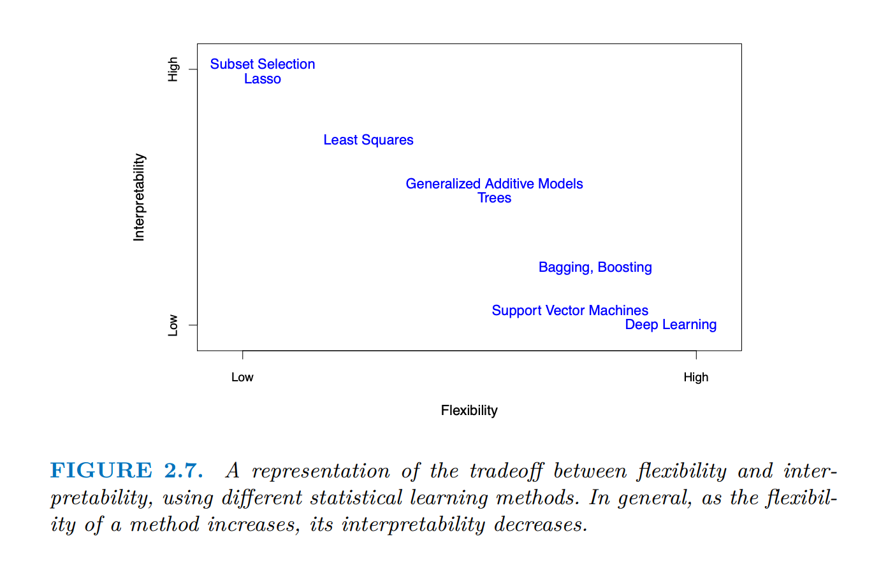
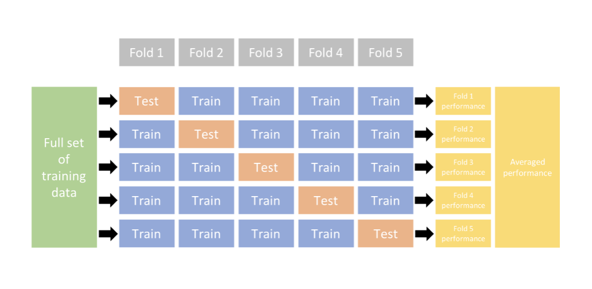
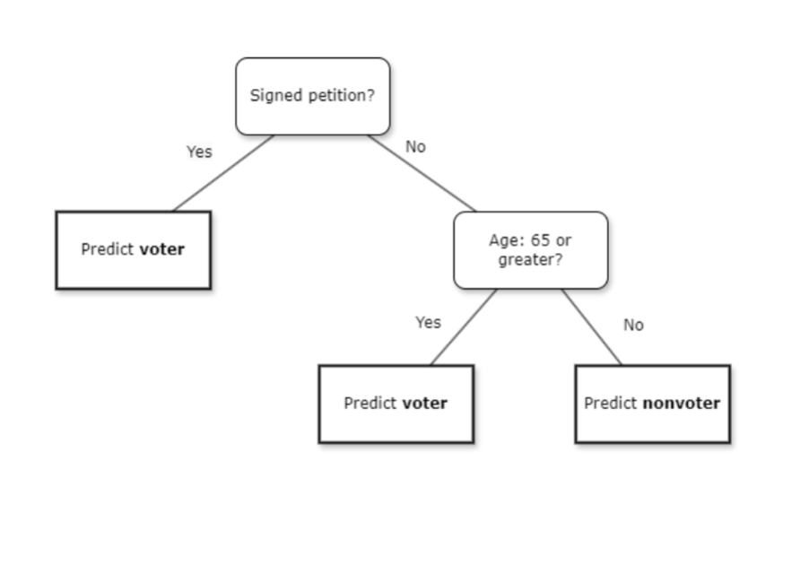
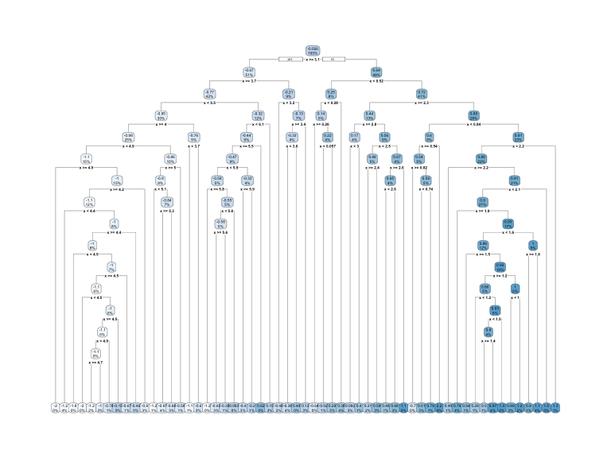
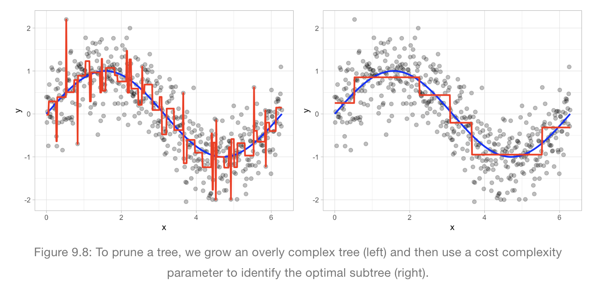

Machine Learning: Applications in Social Science Research (ICPSR)
![]()
Preface
Professor: Christopher Hare
Affiliation: UC Davis
THESE ARE NOTES! These do not and cannot replace learning the material through a classroom setting.
Files for Download
Module 1 Files
Module 2 Files
Module 3 Files
Module 4 Files
Required reading
James, Gareth, Daniela Witten, Trevor Hastie, and Robert Tibshirani. 2021. An Introduction
to Statistical Learning with Applications in R. 2nd ed. New York: Springer. https://www.
statlearning.com/Boehmke, Bradley and Brandon Greenwell. 2019. Hands-On Machine Learning with R. Boca
Raton, FL: CRC Press. https://koalaverse.github.io/homlr/Chollet, Francois, J.J. Allaire, and Tomasz Kalinowski. 2022. Deep Learning with R. 2nd ed.
Shelter Island, NY: Manning.
Coding Software
This course teaches machine learning through R. R is pretty good with machine learning and covers everything we need to. Python is good but in the interest of time, we focus on R.
Module 1: Motivation and Foundations
Parametric vs. Non-Parametric models
Our goal is to use data to estimate f(x) (this is the line or true relationship). We want to find a function \(\hat{f}\) such that \(Y\approx \hat{f}(\textbf{X})\) for any observation (X, Y). So how do we estimate f(X) (the line/relationship)? We can use either a parametric or non-parametric approach/model. Up until now, I have only been taught parametric (this being linear regression, etc.).
So which is better, parametric or non-parametric? The answer is simple: the parametric approach will outperform the non-parametric approach if the parametric form that has been selected is close to the true form of \(f\).
Parametric Methods
We make an assumption about the functional form, or shape of f (the function/line). Usually this assumption is that \(f\) is linear.
We then need to fit or train the model. This means we need to estimate the parameters (\(\beta_1,\beta_2,...,\beta_p\)).
the most common approach and the one we have been trained extensively is ordinary least squares (OLS).
OLS is one of the many possible ways to fit the linear model
- We use OLS because when the assumptions are met, it is BLUE.
One potential downside of a parametric approach is that the model we choose will usually not match the true unknown form of \(f\).
we want to be careful about over-fitting the data.
this means they follow the errors, or noise, too closely.
this is bad because your model will struggle to estimate responses on new observations that were not part of the original training data set.
Maybe the true relationship has some curvature (it isn’t linear) but the linear model we create gets us reasonably close to describing the relationship between the X and Y variables.
Non-Parametric Methods
We do not make assumptions about the functional form of \(f\).
non-parametric approaches estimate \(f\) as close to the data points as possible without being too rough or wiggly
- lower residuals
One major disadvantage of non-parametric approaches is that a lot more observations are needed to get an accurate estimate for \(f\).
You can still over fit a non parametric model.
Prediction Accuracy and Model Interpretability

An obvious question that follows is: Why would we ever chose a more restrictive method instead of a very flexible approach? Wouldn’t more flexibility get us closer to the true \(f\)?
restrictive models are easier to interpret
the relationship is straightforward and easy to understand!
OLS is not only really good (it is the best when assumptions are met) but it is super easy to interpret.
Supervised versus Unsupervised Learning
Supervised
Pretty much all the models I have used thus far (and listed prior) use supervised learning.
- each observation of the predictor measurement has an associated response measurement for \(x_i\) there is an associated \(y_i\) value.
Goal: prediction and inference (both involve modeling the relationship between predictors and outcome of interest)
The goal of supervised learning is to learn a predictive model that maps features of the data (e.g. house size, location, floor type, …) to an output (e.g. house price). If the output is categorical, the task is called classification, and if it is numerical, it is called regression.
Unsupervised
More challenging
not focused on in this workshop.
Goal: search for simple structure underlying data set (what are the relationships between variables)
You have a bunch of dependent variables and you think there is some cause underlying them. We are trying to back out an X.
for every observation we observe a vector of measurements \(x_i\) but no associated response \(y_i\)
- like going in blind
called unsupervised because we lack a response variable that can supervise our analysis.
One type is called cluster analysis.
Semi-supervised learning
more rare
kind of in between the two.
don’t worry about this, we don’t go over it.
Overfitting
Very important concept in machine learning.
Overfitting occurs when a model starts to memorize the aspects of the training set and in turn loses the ability to generalize.
Overfitting is reducing bias at a tremendous cost to variance.
We want a balance that gets us as close as possible.
what is the right amount of complexity for our model?
- this bleeds into “tuning” our parameters.
The Bias - Variance Trade Off
We need to find a balance between overfitting and underfitting our model. This balance is the bias-variance trade off.
When we are estimating \(f\), we don’t want to ignore true nonlinear complexities, but we also want parsimonious models of social/behavioral phenomena that generalize well.
Our estimated function \(\hat{f}\) should be an approximation to \(f\) (i.e., the true data generating process) that minimizes bias and variance.
This is referred to as a trade-of because it is easy to obtain a method with extremely low bias but high variance (for instance, by drawing a curve that passes through every single training observation) or a method with very low variance but high bias (by ftting a horizontal line to the data). The challenge lies in finding a method for which both the variance and the squared bias are low.
Variance
Variance refers to the amount by which \(\hat{f}\) would change if we estimated it using a different training data set.
remember that we are trying to estimate \(f\) using our sample. There is uncertainty around it. Different data may give us a different \(\hat{f}\).
We can use one sample to estimate the variance around the estimate.
- this of course is called Standard Error. If a method has high variance then small changes in the training data can result in large changes in \(\hat{f}\).
In general more flexible statistical methods have higher variance.
Bias
refers to the coefficient.
As a general rule, as we use more flexible methods, the variance will increase and the bias will decrease.
Overfitting a model reduces the bias as much as possible at the expense of variance.
Does our estimate \(\approx\) the true population estimate
Model Error
The goal is to reduce both of these errors. But it is a bit more complex. How do we know the level of error is reducible or irreducible? The answer is gauge its predictive power. You do this through the error of your test sample. The section on cross validation will clear this up a bit more (hopefully). We want to minimize the test error.
Reducible error
Error due to disparities between \(\hat{f}\) and \(f\).
This relates to the functional form.
Do we include all of the relevant parameters (variables)?
is it linear or quadratic?
these are the elements we can control
Irreducible error
Error due to stochastic elements that is built into Y, separate from data-generating process of \(f\).
This is error that we cannot model.
- it is the “randomness” of the observations.
Think about people. We can try to model them but every human is different for infinite reasons. We can’t model that and thus, that is irreducible error.
there will still be error remaining even if we approximate \(f\) exactly.
Cross-Validation
Before diving into cross-validation and what it is, we need to continue the thread started above on model error. We need to estimate two kinds of model error to deal with bias-variance trade off.
Training Error:
Error rate produced when model is applied to in-sample data
- The error rate for the data used to estimate the model: how well does the model fit to existing data?
Testing Error:
The average error that results from using a statistical learning method to predict the response of new, out of sample observation.
- The error rate for outside data: how well does the model fit new data.
These two types of error are quite different: in particular, the training error rate can drastically understate the test error rate.
How do we estimate these errors?
We use cross-validation! What is it?
Cross-validation explanation
Randomly divide the available set of samples into two parts: a training set and a test or hold-out set.
keep 80% of the data for training and then use 20% of the data for testing
- this ratio can range. Could use 70-30, 50-50, etc.
Estimate the model using the remaining of the data.
- Apply the model to the observations in that subset, generating predictions \((\hat{Y}_{test}=\hat{f}(X_{test}))\) and residuals \(Y_{test}-\hat{Y}_{test}\) to estimate testing error.
One issue in doing this: we lose data.
Maybe we have very little data…we don’t want to give up some of that data! What do we do?
- To get around this, we use K-fold cross-validation.
K-fold Cross-Validation
Randomly divide the data into K equal sized parts. We leave out part k, fit the model to the other K-1 parts (combined), and then obtain predictions for the left-out kth part.
Imagine we have all the data and we bin it into 4 compartments/sections. This would be called 4-fold cross validation.
Imagine we use the first three compartments to train and then the last section to test
then do it again but use 3 different compartments and a different section to test.
keep going through the permutations.
you average across all
- all the data is used.
You can then compare which method/model does a better job at prediction.
The amount of folds you chose is arbitrary
- most popular is 5 or 10.
You do this for any ML model.

Multivariate Adaptive Regression Splines (MARS)
Imagine doing a regression BUT instead of one line, you can add a bunch to fit the data.
Allow for nonlinearities and automate feature selection within the linear regression framework by searching for optimal hinge points or knots.
- this produces a series of hinge functions h(x-a), where a denotes the location of the knot and h is a regression coefficient.
more flexible than regression (duh)
We are concerned with tuning, not really the variables.
We just throw a bunch of Xs and specify our dependent variable and we just let the machine figure it out.
coefficients are not attached to variables but regions.
See mars.r for example code and more discussion.
Classification problems
When we move from regression problems (where y is continuous) to classification problems (where y is categorical), we need to assess model performance differently
Include different kind of fit statistics in your MLE model.
Confusion matrix:
- more to discuss here. TK 06/20/24
Curse of Dimensionality
Including a large number of predictor variables introduces data sparsity.
- this seems to relate (at least to me) as degrees of freedom (might be wrong)
Shrinkage or regularization methods purposefully bias the coefficients (towards zero) in such a way that improves overall predictive performance by navigating the bias-variance trade-off.
This is more of a conceptual problem. Every additional independent variable we include increases the space exponentially: the space that we’re operating in for DV ~ IV1 + IV2 + IV3 is exponentially larger than DV ~ IV1 + IV2.
And so we’ll end up in cases where we don’t have observations in unique combinations of IV1, 2, and 3. A parametric model, like OLS, will fit a line through the middle of the space (to minimize error) but it will end up giving us predictions for observations that don’t exist
e.g., if we are predicting vote choice using race (white, black, Asian) and partisanship (democrat, independent, republican), if we have 1,000 observations we should observe every combination of those IVs. However, if we add additional covariates, like income, gender, state of residence etc., we are likely to end up with situations where we have no observations with a given combination of covariate values (e.g., perhaps we have no black, female, republicans who make >$100k, and live in Alaska)
- This is a problem ML field cares about but the political science field does not give this issue much attention (they should).
Receiver-operator characteristic curves
navan.name/roc/
good explanation of ROC.
- the more we separate the sets of outcomes (blue and red pdfs), the better our model is.
True positive rate against the False positive rate
Binary Classification method
seems popular in health.
Area under the Curve (AUC) - we want to maximize this value.
I think we use to evaluate different models?????????
Shrinkage and Regularization
I’m confused about this…still not clear. Why would we need this when we have k-fold cross validation…doesn’t that minimize bias? How do we know when to use these methods? Answer from 06/21 - we apply cross validation to these methods to determine what amount of shrinkage we want.
Our end-goal is an accurate model (as measured by out-of-sample or test set performance)
We can use shrinkage and regularization to help us.
- helps us prevennt over fitting.
Shrinkage pulls coefficients closer to zero as the regularization parameter increases.
Ridge Regression (L2)
AKA penalized least squares or penalized likelihood) is another shrinkage method that penalizes large magnitude values of beta coefficients in regression models.
we add bias to our coefficients
why would we do that?
push our regression parameters closer to zero.
helps our variance.
- bias-variance trade off to maximize fit for out of sample observations.
Literally a regression model, just adding a penalization function. (square the beta)
Shrinkage: when you have less data shrink to the overall mean.
- think of batting averages - Hank Aaron vs. some random guy who had one at bat and has a perfect batting average.
\(\lambda\) is important
can be any value between zero and infinity
if zero then the ridge regression penalty will equal the same line as the OLS line.
the larger the value, the greater the penalty
- think of the slope of the line changing.
How do we figure out which \(\lambda\) is the most optimal?
We use cross-validation!
- to determine what \(\lambda\) produces lowest variance
Can also be used if IV is discrete.
- and logistic regression.
Lasso (L1)
Simulations
Simulations are most of what we do here.
Re-sampling to estimate uncertainty intervals
Bootstrapping to estimate uncertainty intervals
Monte Carlo experiments to learn about the properties of an estimator, uncover predictor effects, and evaluate counterfactual/future scenarios.
Bootstrapping
We can make a whole bunch of new samples with the original sample.
We can’t see the population parameter, but we can estimate it using repeated samples via bootstrapping.
- we can get pretty damn close to it!
Meeting with Sam Fuller (TA) 06/24
By minimizing the test error, we can discriminate between reducible and irreducible error. Correct?
these algorithms are really good at fitting data
you must cross validate - basically.
- very useful
Parametric v. non-parametric difference
ML land is focused on prediction - we don’t care about the black box
- we just care about how good it is.
in parametric land we care about the variable - not really R^2
Maybe this division outlined above is not ideal
- distinction without a difference.
Parametric models are not perfect and not necessarily the best for causal inference - Sam.
Read Breiman
The issue is with this method is that you will get pushback from people who don’t understand.
still need to know what and how to measure - this is where the theory comes from.
How do we know which models to use.
Sam thinks MARS and regularization are lipstick on a pig
- still using parametric assumptions but using ML
Inference vs ML
- Sam thinks interpretation is better than inference.
Random forests is the meet of the class.
- dumb decision trees but when we sum them all together we get close to the truth.
Module 2-3: Trees
Think of the game Guess Who?
Trees
Decision trees use splitting rules to stratify or segment the predictor space into a number of simple regions, either for regression or classification problems
Can be applied to both regression and classification problems (continuous and discrete).
We can present these rules in tree form
It is important to remember that what trees are doing is recursive partitioning the feature space (X) with binary (yes/no) splits.
Their goal is to specify regions of the covariate space such that the outcome is homogeneous and the number of observations in each region is sufficiently large, yet where the regions themselves are sufficiently numerous and unstructured to allow for complex relationships between covariates and the outcome.

The tree above has two internal nodes and three terminal nodes (or leaves)
We need to know one tree and then we can get more and more trees and create a forest.
- this will be very powerful
Tree-based methods to be very useful for making accurate predictions when the underlying Data Generating Process (DGP) includes nonlinearities, discontinuities, and interactions among many covariates.
appropriate to use when researchers’ primary goal is to correctly capture the nuances of a potentially complex but known DGP in a setting with many potential predictors related in nonlinear and interactive ways to the outcome.
- TREES SHOULD NOT BE USED FOR THEORY TESTING BUT FOR BETTER PREDICTION.
The power of trees becomes apparent when we add a bunch together.
Trying to find splits in nodes that have the largest differences between means.
Trees split based on maximizing the information gain.
- we want pure nodes
Individual trees are very sensitive.
Model is GREEDY
it does not backtrack
- it finds the best split and then moves on.
Depth
How deep do we want a tree? The deeper the tree, the more complex.
Greater depth may lead to an overfit.

This is what an overly complex tree looks like.
- we need a balance b/c this is overfitting.
The shallower the tree -> less variance.
- but we need to find a balance so that the tree can at least capture nuances and potential interactions within the data.
We control this by either limiting how deep it can go OR pruning the tree
Early Stopping
Early stopping refers to specifying how many terminal nodes the tree will have.
- will it have 2, 3, 4, etc.
The shallower the tree -> less variance.
but too shallow and we have bias
- we need to find a balance so that the tree can at least capture nuances and potential interactions within the data.
Pruning
Another method to specify the depth of the tree
we find an optimal sub-tree to
basically determine where we can optimally set splits. (see below for an example)

Benefits of trees:
Allows p>>n
straightforward interpretation
naturally models interaction effects
implicitly conducts feature selection.
When we combine individual trees and average - they are spooky good
Entropy
Very important for decision trees.
Quantifies similarities and differences
we want to minimize entropy.
How do we decide to divide the data?
Formula:
Bagging
Bootstrap aggregating
- bootstrap original dataset -> create a bunch of individual trees -> aggregate and average the individual trees.
because we are bootstrapping from the original sample, they are all somewhat similar.
Although usually applied to decision tree methods, it can be used with any type of method.

Still one problem:
Although the model building steps are independent, the trees in bagging are not completely independent of each other since all the original features are considered at every split of every tree.
Rather, trees from different bootstrap samples typically have similar structure to each other (especially at the top of the tree) due to any underlying strong relationships.
in layman terms, the independent trees we create. Look very similar.
this means these independent trees have a high degree of correlation with each other.
- Random forrests do a better job by reducing this correlation and improve the accuracy of the model.
Random Forrest
Still do bagging but add a new rule:
- every time a split is considered, only consider a random subset of prediction variables in which to split.
Forces trees to be different from each other
- individual trees become “dumber”.
We want diverse exploration
- trees are exploring different components of the data generating process that may not be as obvious.
The individual trees lack complete understanding but if we put them together, we can get a more comprehensive account of the data generating process.
“Rashomon effect”
- Breimen uses this example.
Honda civic of machine learning
- neural networks are spaceships
Still optimizing out of sample data.
Boosting
Fit a single tree to the entire data
then take the residuals from the result
now, fit another tree to the residuals.
keep going.
- it is SEQUENTIAL.
Still have an overfitting problem
people like boosting > random forest
VERY POWERFUL!
best tree based method
- and tree based methods are good for tabular data.
Partial Dependence Plot - no idea what this is
Module 4: Interpretability
What is interpretability?
Interpretability is the degree to which a human can understand the cause of a decision.
- the easier it is for someone to comprehend why certain decisions or predictions have been made.
These ML models are usually known as a “black box”.
goal of interpretability = look inside that black box
- why is it making these predictions.
Do we care solely about the prediction being made or do we want to know why a prediction was made
this distinction leads us to make some decisions about our model.
- the WHAT vs. the WHY
Think about why OLS is so popular.
it is easy to interpret!
- it is also powerful.
Interpretability Usefulness
Interpretability is useful for detecting bias
If we know why it gave a prediction, we can tune it and fix any bias
- This is important for racial bias issues.
Interpretability can helps us extract insights and actionable information from ML models.
Questions like such can be answered with more interpretability:
What are the most important customer attributes driving behavior?
How are these attributes related to the behavior output?
Do multiple attributes interact to drive different behavior among customers?
Why do we expect a customer to make a particular decision?
Are the decisions we are making based on predicted results fair and reliable?
Local Interpretation v. Global Interpretation
Global Interpretation:
understanding how the model makes predictions, based on a holistic view of its features and how they influence the underlying model structure.
think of a zoomed out view
Describe how features affect the prediction on average.
Global model interpretability helps to understand the relationship between the response variable and the individual features (or subsets thereof).
Very hard to do in practice.
we usually have hundreds of variables (even millions).
- We can get an idea of what variables are the most powerful but to the extent that we can fully grasp the model from a zoomed out view is extremely difficult.
Since they describe average behavior, they are good for the modeler when we want to understand the general mechanisms in the data or debug a model.
Types of Global Interpretation Methods:
Partial Dependence Plot
Accumulated Local Effects Plot
Local Interpretation:
Global interpretation can be deceptive. It may tell us what variable is important BUT that is not necessarily true for all observations.
Local interpretation helps us understand what features are influencing the predicted response for a given observation (or small group of observations).
- Helps us understand why our model is making a specific prediction for THAT (or a group of) observation
Aims to explain individual predictions
Module 5: Neural Nets and Deep Learning
Social scientists mostly work with tabular data
- Because of this, other ML methods are usually better (more simpler) for our needs.
Citation
@online{neilon2024,
author = {Neilon, Stone},
title = {Machine {Learning:} {Applications} in {Social} {Science}
{Research} {(ICPSR)}},
date = {2024-06-10},
url = {https://samanthacsik.github.io/posts/2022-10-24-my-blog-post/},
langid = {en}
}